Let's talk web security: How safe do users feel when they step into your cyber crib?
It takes the average hacker about 0.29 milliseconds to crack a 7-character password. That's 90.3 seconds faster than the actual length of a moment.
Thankfully, security goes far beyond just passwords.

Click and hold the lock so we can pick your security measures apart.
Is your website super secure or are you click-and-crack bait for bored hackers?
Find out how secure your website is.